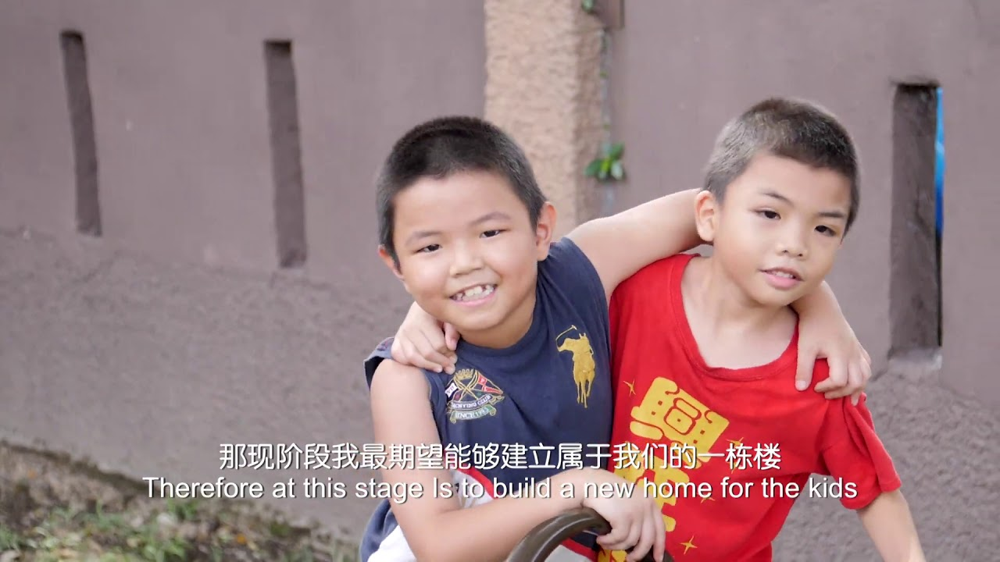

OUR MISSION

Our mission is to provide proper shelter quality education healthcare and emotional
support to orphaned children. We focus on creating a loving environment that promotes
personal growth discipline and independence. By working together with donors volunteers
and the community we strive to prepare children with essential life skills so that
they can become responsible productive and confident individuals in the future.